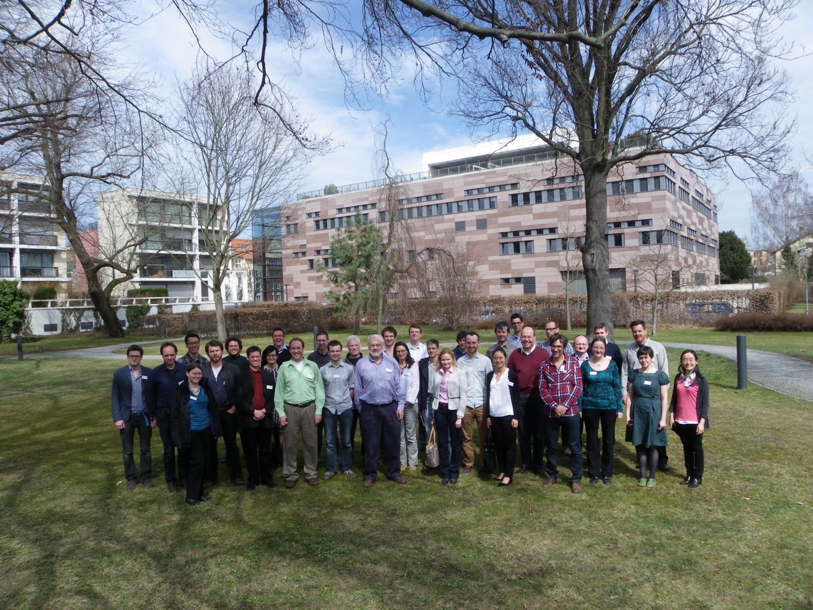

Third GeoMIP Workshop
Institute for Advanced Sustainability Studies, Potsdam, Germany
Monday, April 15 through Tuesday, April 16, 2013
|

| |
Workshop Agenda
Workshop Summary (Published in Eos)
Conference Organizers: Francois Benduhn (IASS), Jim Haywood (UK Met Office), Peter Irvine (Harvard University), Ben Kravitz (Pacific Northwest National Laboratory), Mark Lawrence (IASS), Achim Maas (IASS), Alan Robock (Rutgers University), and Hauke Schmidt (Max Planck Institute for Meteorology)
This workshop is a continuation of the first workshop held at Rutgers University in February 2011 and the second workshop held at the University of Exeter in March 2012.
Objectives of the Workshop:
- Summarize GeoMIP results to date
- Discuss contributions to the GeoMIP special issue of Journal of Geophysical Research--Atmospheres
- Futures of GeoMIP
- Interdisciplinary efforts
This workshop is partially supported by U.S. National Science Foundation (NSF) grants AGS-1157525 and GEO-1240507.
| |